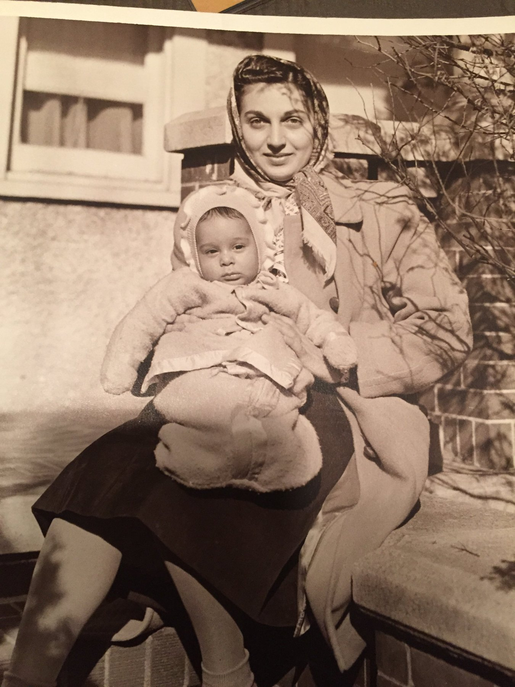
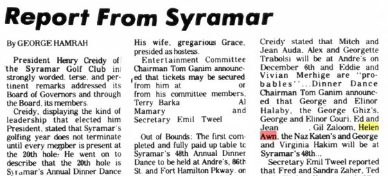
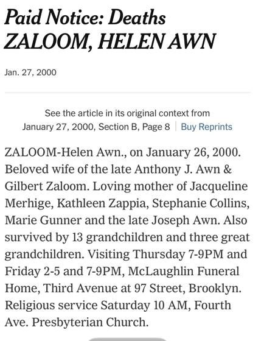

Anthony’s wife, the eldest of three living daughters. She raised five children on 86th Street; in 1950 her mother and her sister Evelyn lived in the same house.
Helen: family photograph A, undated. The family says (the name is the family’s label on the print).

Helen with her infant son Joseph: family photograph C, undated. The family says (the names are the family’s labels on the print).

Anthony and Helen: their wedding portrait. The print has no date. The family says (the names are the family’s labels on the print).

- Born
- 9 January 1917, Brooklyn Confirmed
- Married
- Anthony J. Awn, probably Sunday 29 December 1940 (a Caravan anniversary note points to 28 December) Probable
- Second marriage
- Gilbert Zaloom, 1976 Probable
- Died
- 26 January 2000 Confirmed
- Buried
- Green-Wood Cemetery, probably in her parents’ lot (a Find a Grave listing; the cemetery’s own record is not seen) Probable
- Children
- Five Confirmed
- Parents
- Antoon (Anton) Saydah and Wassela Hadad Saydah Confirmed
- Sisters
- Evelyn Saydah, Virginia Saydah Hakim and the baby Lily Saydah Confirmed
Spellings in the records: Helen Awn after her marriage.
Read the full story All the people
Documents about Helen Saydah
 Document 130Helen as a young woman
Document 130Helen as a young woman Document 76Anthony and Helen's anniversary, and the death of Isabel's father, January 1958
Document 76Anthony and Helen's anniversary, and the death of Isabel's father, January 1958
Document 46Helen and Gil on the Syramar guest list, 21 November 1975
Document 127Helen Awn Zaloom, paid death notice, 2000 Document 68Memorial card for Helen Awn Zaloom, January 2000
Document 68Memorial card for Helen Awn Zaloom, January 2000Each fact carries its label: Confirmed (shown in a record), Family (told to us) or Probable (fits but unproven). Living relatives are not listed.